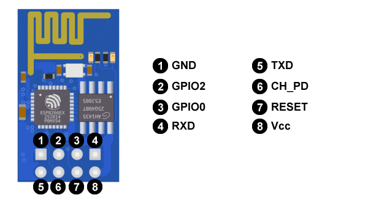
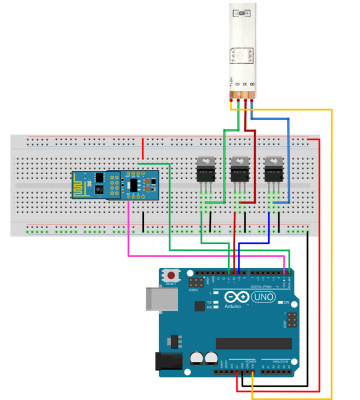

Development of 2D and / or 3D plans




Calculations Based on Design
Project plans were designed for its next production, the characteristics of the CNC wood machine were considered for the preparation of cuts, besides proposing the circuits that will be used and the lamps defining them in a document.
The initial idea that we want to develop is to design and manufacture a product that fuses the new technologies (Arduino) with the handicraft processes (CNC - WOOD) A manufacturing process through a student-craftsman collaboration, which adds value to the product and that is reinforced by including interactive features by using an Arduino board.
Archivo - Download Designs File 3dmParametric Design
The parametric design is the abstraction of an idea or concept, related to the geometric and mathematical processes, which allow us to manipulate our design with greater precision to reach optimal results. Below are details about this new design form.
In general, the software that is implemented for this advanced modeling in 3D and generative design are Rhinoceros and Grasshopper.
Most likely, most architects are aware of Rhinoceros as software that allows 3D modeling intuitively and accurately, however, Grasshopper turns out to be newer or unknown software. Grasshopper is a Rhinoceros plug-in, oriented to the parametric design that works as an editor of generative algorithms. The advantages of this program is that unlike many, this does not require programming or scripting experience, which allows creating parametric designs from generating components, obtaining a considerable time optimization.
File - Download ParametricFurniture mold for PC
File - Download PC moldCalculations of the design of Lamps
Archive - Lamp manufacturing
The present file contains data about the models and planes of the lamps.
DocumentElectrical Part of the Project - Arduino Programming and RGB by WIFI
Sending data to the Internet
What comes to mind just knowing this type of device is the possibility of sending any data they have available to the Internet, either to a website or a cloud service that registers such data, such as ThingSpeak, although there are many others with similar characteristics.
Hardware
-It uses a Tensilica L106 32-bit CPU, operating voltage between 3V and 3.6V, operating current 80 mA, and the operating temperature ranges from -40ºC and 125ºC.
Connectivity
Supports IPv4 and TCP / UDP / HTTP / FTP protocols, does not support HTTPS at first. Yes, it does so through software in both client and server TLS1.2. The first implementation is still under development. GPIO ports (general purpose)
It has 17 GPIO ports but only 9 or 10 can be used. The GPIO16 is special since it is connected to the RTC (Real Time Clock), it can be configured with Pull-up or Pull-down resistance, and it supports the main communication buses ( SPI, I2C, UART).
Electrical characteristics
-Working voltage between 3V and 3.6V: According to news from the CEO of Espressif, it admits 5V input voltages in the GPIO ports.
-Consumptions: It will depend on different factors such as the way the ESP8266 is working, the protocols we are using, the quality of the WiFi signal and, above all, whether we send or receive information through WiFi. They oscillate between 0.5 μA (microamperes) when the device is off and 170 mA when transmitting to signal stop.
-Modes of operation: Due to the sectors to which it is focused, wereables, IoT and mobile devices, the ESP8266 requires an effective energy management. It has a low consumption architecture that works in 3 modes.
-Active mode or active mode: full performance, Sleep mode or sleep mode: only the RTC (Real Time Clock) is active to maintain synchronization. It stays in alert mode of the possible events that make you wake up. It keeps the connection data in memory and so there is no need to reconnect with WiFi. It consumes between 0.6 mA and 1 mA, and the Deep sleep or deep sleep mode: the RTC is on but not operative. You must go through sleep mode before you wake up. We must take special care with the data since in this state it is as if it is turned off and all the data that is not stored is lost. Consumes around 20 μA.
First we will proceed to control the LEDs by means of Wi-Fi. For them
-The LED strips can be easily controlled with any type of microcontroller. In this example, we use PWM attenuation techniques to control the power of each RGB channel in the band. Since each color channel can absorb a lot of current (of the order of a few amperes, or more), power transistors are required. Do not try to connect the LED channels of the strip directly to your microcontroller, they will damage the outputs of the microcontroller or they will not work.
-You can use any NPN BJT or N-Channel MOSFET power, but make sure the transistor is capable of managing the current you need. For example, if your LED strip draws 0.2 A / m per channel, if you have a 5 m band you will need a transistor of up to 1 A. The common packet for the power transistor is the TO-220.
-For basic and low-cost systems we suggest using N-channel MOSFET, such as the IRF520N or the ST P55NF06 or the TIP120, they are very popular and inexpensive. If you can not get them, the NPN transistors are also good, but they have higher power losses than in the MOSFETs, so we suggest the first ones.
-The hardware to use is: Arduino UNO Board, ESP-01 WiFi module (with μPanel Firmware), ADP-01 Breadboard adapter, Breadboard, RGB LED Strip and Power Transistors (we used the N-MOS STP55NF06).